Переклади · журнал «ДентАрт» 2016 №4
Естетика у фронтальній ділянці: системний підхід
ESTHETICS IN THE ANTERIOR MAXILLA: A TEAM-ORIENTED APPROACH
У цій статті описано клінічний випадок реконструкції двох втрачених центральних різців на верхній щелепі. Після видалення зуба 11 було проведено заходи для збереження кісткової тканини альвеолярного відростка, а через 8 тижнів — процедуру імплантації з фіксацією провізорної ортопедичної конструкції. Безпосередньо перед встановленням тимчасового протеза був видалений зуб 21, в зоні якого відразу ж встановили дентальний імплантат.
Втрата зубів в естетично важливій ділянці щелепи є причиною значного стресу для стоматологічних пацієнтів. Завдяки тому, що прогнозованість процедури дентальної імплантації зростає, відновлення ділянок адентії за допомогою інфраоссальних титанових структур набуває все більшої популярності. Нині критерієм успішності імплантації є не тільки сам факт остеоінтеграції імплантата, але також і естетичний результат лікування: важливо, щоб така реставрація гармоніювала з усмішкою, з основними структурами обличчя. У свою чергу періімплантатні м'які тканини повинні максимально відповідати параметрам інтактних ясен з урахуванням їх висоти, об'єму, відтінку і контуру, а реставрація — імітувати колір, форму, структуру, розмір та оптичні характеристики природного зуба і жодним чином не виділятися із зубного ряду.
За мультидисциплінарного підходу можуть бути реалізовані відразу кілька алгоритмів лікування, як, наприклад, мінімально інвазивний протокол, техніка збереження гребеня, аугментація сполучної тканини, тимчасова протетична реабілітація, пластична естетична хірургія пародонту тощо, не кажучи вже про можливості аналізу усмішки за допомогою цифрового дизайну усмішки (DSD).
Клінічний випадок
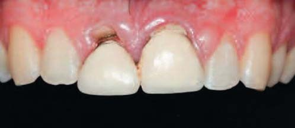
Фото 1. Естетичний провал у зоні центральних різців: альтерація маргінального профілю ясен на ділянці зуба 11.
Кілька років тому обидва центральні різці молодого пацієнта були відновлені металокерамічними коронками. Враховуючи теперішній стан, ця реставрація може бути класифікована як повний естетичний провал (фото 1). У зоні обох зубів виявлено ознаки рецесії, краї конструкції візуально виділялися на тлі альтерації м'яких тканин, не кажучи вже про повну втрату гармонійного співвідношення між архітектурою ясен і граничним контуром реставрацій. План лікування передбачав видалення проблемних зубів, подальшу установку імплантатів з гвинтовою фіксацією монолітних літій-дисилікатних коронок. Для забезпечення максимальної естетичності профілю усмішки після відновлення зони адентії було запропоновано відкоригувати форму бічних різців з використанням композитного матеріалу.
Хірургічний етап лікування
У ході клінічного аналізу ситуації було вирішено замінити два скомпрометованих різці дентальними імплантатами (NobelActive, Nobel Biocare). Щоб забезпечити цілісність міжзубного сосочка, екстракцію зубів робили поступово: спочатку був видалений зуб 11, і лише через кілька тижнів — зуб 21, після чого відразу ж були встановлені імплантати. Провізорна конструкція виготовлена з консолем у зоні зуба 21 з метою формування адекватного ясенного контуру. На фото 2-5 продемонстровано етапи хірургічного втручання.
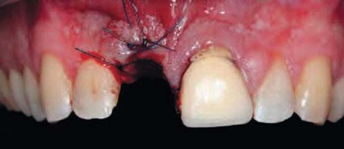
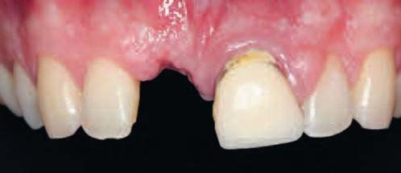
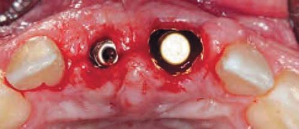
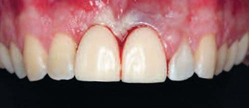
Ортопедичний етап лікування
Збереження контуру м'яких тканин — важливий аспект для досягнення успішних результатів реабілітації, але передача точної позиції такого контуру зубному технікові залишається досить складним завданням. Для репліки архітектури м'яких тканин під час отримання відтиска стандартний трансфер в зоні зуба 11 був індивідуалізований. Після цього отримані відтиски зі всієї зони адентії з використанням як стандартних, так і індивідуалізованих трансферів (фото 6). Отримана гіпсова модель модифікована шляхом нівелювання зони зуба 21, після чого використовували силіконовий відтискний матеріал для реєстрації профілю м'яких тканин над консольною частиною провізорного протеза (фото 7).
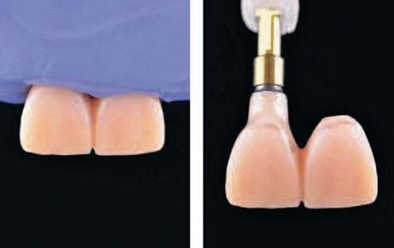
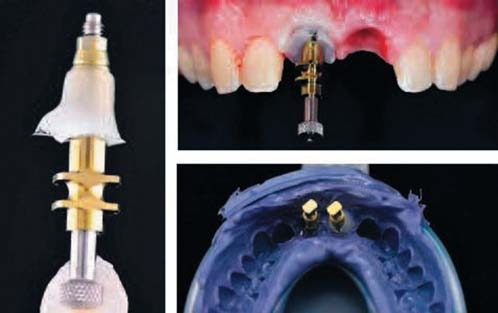
Цю позицію ясен передали за допомогою стандартного зліпкового трансфера, в результаті отримали індивідуалізований відтиск ділянки імплантації на місці зуба 21 (фото 8). На наступному етапі провадився детальний аналіз клінічної ситуації за допомогою DSD (фото 9), в результаті чого було виявлено непропорційність співвідношення об'ємів бічних і центральних різців. Бічні різці були занадто вузькими у порівнянні з широкими центральними зубами масивної квадратної форми. Для забезпечення належної гармонії усмішки потрібно провести ще і відповідну корекцію форми бічних різців. Тому для попередньої оцінки було виготовлено воскову репродукцію майбутніх реставрацій, яку приміряли в порожнині рота, а потім виготовили нові провізорні конструкції.
З метою відновлення бічних різців за допомогою тимчасового воскового матеріалу виготовлено восковий ключ. За допомогою наявного провізорного протеза і композитного мокапа латеральних різців можна було повністю перенести нову форму усмішки на воскову репродукцію, яка в подальшому стала зразковою моделлю при виготовленні остаточних протетичних конструкцій. Відтінок вибирався за допомогою перехресно-поляризованого світла, а небажані віддзеркалення усунуті з використанням фільтра для очей. Для виготовлення остаточних протезів просто робили повне дублювання провізорних конструкцій з IPS e.max Press блоку (монолітного літій-дисилікату). Фіксація IPS e.max Press коронок забезпечувалася за допомогою гвинта, а отвір доступу був заповнений тефлоном і композитом.
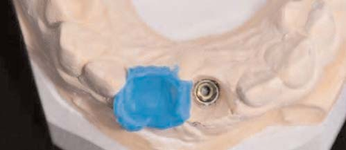
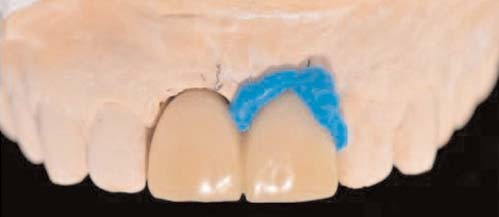
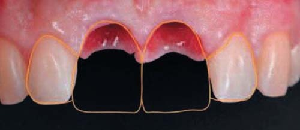
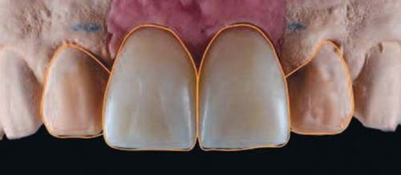
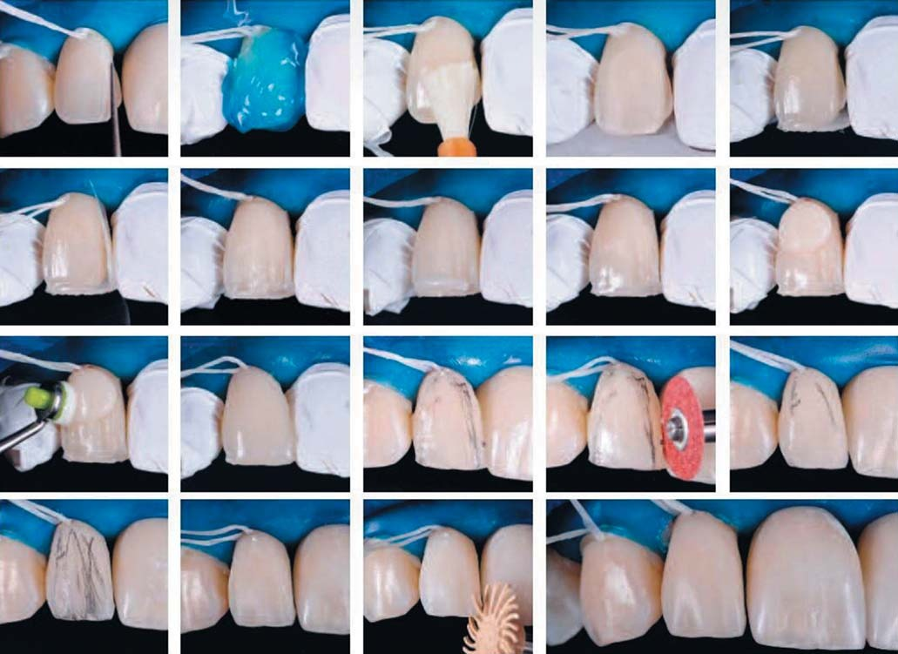
Фото 10. Етапи моделювання композитної реставрації в зоні бічних різців.
Відновлення бічних різців робили композитом IPS Empress Direct/Ivoclar Vivadent з додатковим використанням силіконового ключа. Збіг відтінку композиту і IPS e.max кераміки виявився просто ідеальним. У процесі лікування з метою ізоляції був використаний OptraDam Plus/Ivoclar Vivadent. У ході відновлення різців формування реставрації робилося технікою стратифікації (фото 10).
Після надання емалі незначної шорсткості її поверхня була протравлена за протоколом тотального протравлювання, а після цього проведена адгезивна підготовка Adhese Universal/Ivoclar Vivadent, який був полімеризований лампою Bluephase Style. Емаль з піднебінного боку відновлювали відтінком А2 композиту IPS Empress Direct за силіконовим ключем, у той час як для основи дентину і мамелонів використовували відтінок дентину А3. Природний вигляд реставрацій був досягнутий завдяки ефекту опалесценції в зоні ріжучого краю між мамелонами, відтвореного за допомогою IPS Empress Direct Trans Opal. Після цього зону реставрації покрили ще одним шаром емалі А2 IPS Empress Direct. Контурування морфологічних структур робилося з використанням алмазних борів, шліфувальних форм і шліфувальних дисків. Для полірування відновлення використовували силіконові поліри та алмазовмісні пасти. Після реставрації вдалося домогтися гармонійніших форми, кольору і розміру бічних різців (фото 11).
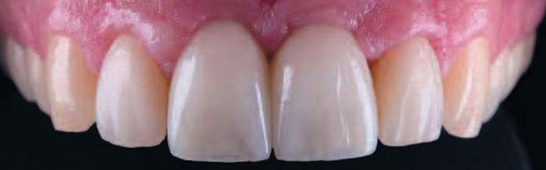
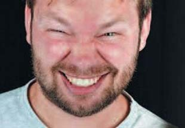
Проблема збереження сосочка не є такою критичною при встановленні одного імплантата, але при необхідності його збереження між двома титановими інфраконструкціями лікареві вже доводиться замислитися над вибором алгоритму ятрогенного втручання. Одним з можливих вирішень проблеми може бути почергове видалення проблемних зубів, а також обов'язкове використання провізорної реставрації, яка допомагає зберегти відповідний контур м'яких тканин. Крім того, можна також робити аугментацію ясен з використанням сполучнотканинного трансплантата, оскільки останні дослідження, проведені для вивчення успішності такого підходу, демонструють досить перспективні результати.
Але в будь-якому випадку основна мета естетичної реабілітації полягає в тому, щоб забезпечити гармонійне співвідношення між білою і рожевою складовими, отже, цифрове планування і графічний аналіз кожної окремої клінічної ситуації досить важливі. Слід також звернути увагу на те, які матеріали краще використовувати: на відміну від конструкцій з оксиду цирконію або титану, монолітна конструкція з дисилікату літію не сприяє відновленню м'якотканинного прикріплення навколо імплантатів. Але, враховуючи цей аспект, можна просто використовувати гібридні абатменти на титановій або цирконієвій основі.
Висновки
Мультидисциплінарний командний підхід — важлива і значуща складова на шляху до досягнення прогнозованого результату лікування. Крім того, детальний аналіз та планування ятрогенних втручань відіграють не менш важливу роль у забезпеченні успішного результату реабілітації. Фото- та відеодокументація залишаються потужними інструментами повсякденної практики сучасних лікарів-стоматологів.